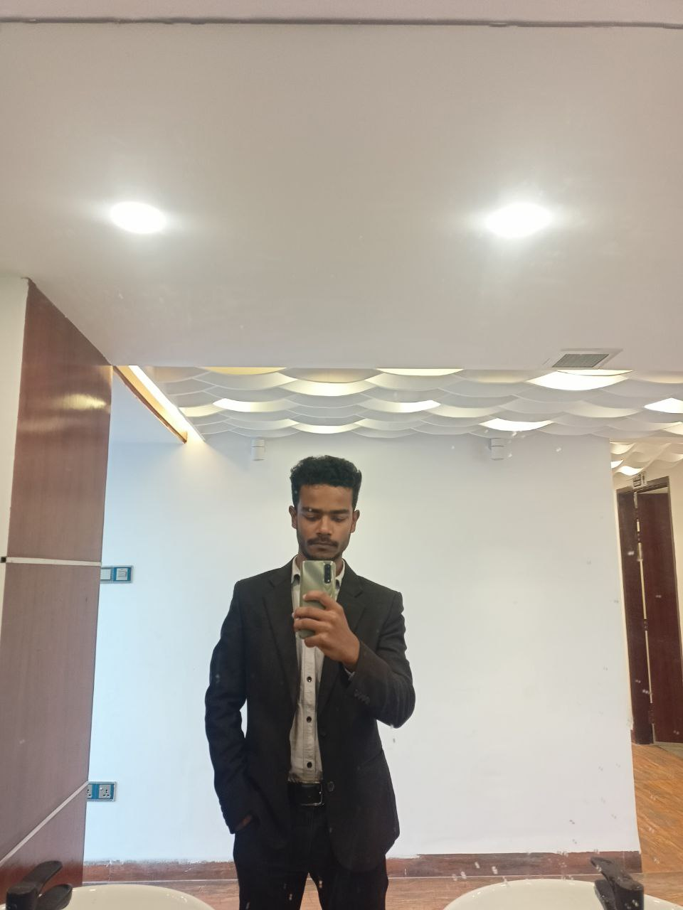

Abid Hasan Apurbo
Contact
- Adress:
Tangail Sadar,Tangail
- Phone:
01719072924
- Email:
abeidhasanapurbo@gmail.com
Skill Highlights
- Communication
- Collaboration
- Presentation
- Critical Thinking
- Problem-Solving
- Leadership
Programming
- HTML and CSS
- SQL
- Software Development and Programming
- Python
- Java and JavaScript
Languages
|
Summary
Senior Web Developer specializing in front end development.
Experirenced with all stages of the development cucle for
dynamic web projects. well-versed in numerous programming
languages including HTML5, PHP OOP, JavaScript, CSS, My SQL.
strong background in project management and customer relations.
Experience
Web Developer - 09/2015 to 05.2019
- Cooperate with designers to create clean interfaces and
simple, intuitive interactions and experiences.
- Develop project concepts and maintain optimal
workflow.
- Work with senior developer to manage large, complex
design projects for corporate clients.
- Complete detailed programming and development tasks
for front end public and internal websites as well as
challenging back-end server code.
- Carry out quality assurance tasts to discover errors and
optimize usability.
Education
Bachelor of Science: computer Information System - 2014
MBSTU,TANGAIL
Certifications
PHP Framework (certificate): Zend, codeigniter, Symfony.
Programming Languages: JavaScript, HTML5,PHP OOP, CSS,
SQL, My SQL.
|